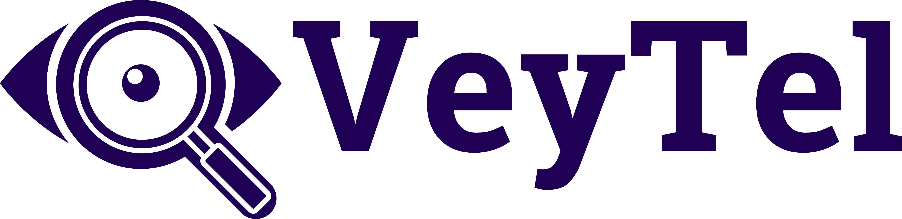
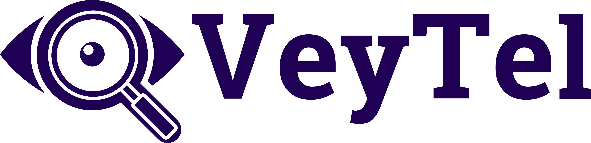

My Work
Healing at Home: Enhancing Post-operative Care for Skin Cancer Patients
Working alongside University Hospitals of Cleveland, we are tackling the challenge of improving at-home patient-administered wound care, utilizing empathetic research, innovative ideation, while collaborating with healthcare professionals to develop tailored solutions aimed at enhancing patient outcomes and experiences in post-surgical wound care management.
View ProjectBikeLinkPro, Designing the Future of E-Bikes
Imagine a world where your daily commute is effortless, eco-friendly, and intelligent. Welcome to BikeLinkPro, the e-bike of the future. Through a rigorous process of user feedback and rapid prototyping, we designed both physical and digital interfaces for semi-autonomous e-bikes, refining usability, safety, and functionality to redefine urban mobility.
View Project"Time to Move!": Accessible Pressure Relief Reminders for Wheelchair Users
I designed and prototyped a multi-modal notification system to remind wheelchair-bound users to perform pressure relief maneuvers. These maneuvers can help significantly reduce the chance of developing potentially life-threatening ulcers.
View ProjectWhat People Are Saying
"Rachel and I first met as peers in Pitt’s Digital Narrative and Interactive Design major. Collaborating with her in and out of the classroom has always been a pleasure. She’s intelligent, detail oriented, and delivers quality work. Her natural curiosity and thoughtful insights about user experience make her a phenomenal addition to any design team."
Digital Designer & Accessible Design Educator